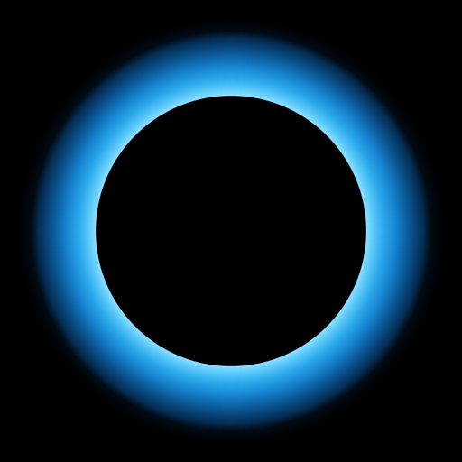
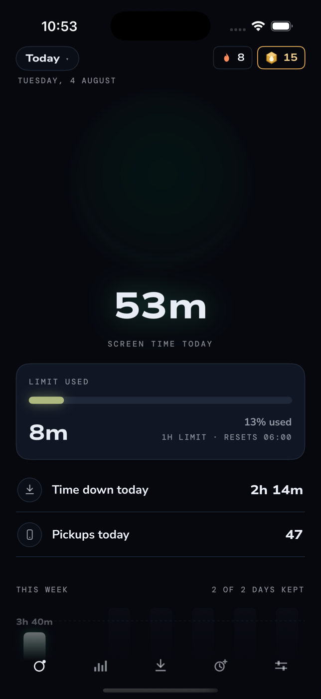

EclipseEclipse puts a hard daily limit on the apps that eat your day. When it runs out, it runs out. There is no "15 more minutes", no talking yourself into it at 1am. If you genuinely need more time, you ask a friend, and they decide.
Free, iPhone, iOS 26 or newer.
No subscription and no trial.

That is how long the average American teenager spends on social media every day. Not on their phone. On social media alone. It comes to 1,752 hours a year, and measured against the roughly sixteen hours anyone is actually awake, that is 109 whole days of waking life, gone.
Gallup, Familial & Adolescent Health Survey, 2023
Why a friend
Every screen time app asks the same person who opened Instagram to also be the person who stops. That is you against yourself at your worst moment, and you have been losing that argument for years. It is not a character flaw. These apps are built by thousands of people whose whole job is to keep you scrolling.
So Eclipse changes who is in the room. Your limit, your streak and your kept days are visible to a handful of friends you chose. Not a feed, not followers, not strangers: three or four people who will notice. Breaking a promise is easy when nobody is watching and surprisingly hard when someone is.
This is the oldest trick in behaviour change, and it is the one that works. It is why people run with a friend instead of alone, and why the gym buddy who is waiting outside beats every alarm you have ever set.
When time is up
Most apps hand you an escape hatch and call it flexibility: a snooze, an "ignore limit", a setting you can raise in four taps at exactly the moment you should not. Eclipse closes those. When today's budget is spent, your apps are hard blocked.
For the message that genuinely cannot wait. Two minutes, granted the instant you tap, in the app you tapped from. Three a day and then a cooldown.
The real emergency door. Ask your lifeline for fifteen minutes, an hour, or the rest of the day, and say why. The first yes opens it. You do not have to raise your limit, and you do not have to delete Eclipse.
Raising your limit is always possible, because this is your phone. It just costs your streak. Tightening is free. Loosening is not.
Two things make that a real decision rather than a reflex. Your lifeline will see your increase, and a new limit applies from the next 6am, never today. Today keeps the promise you made yesterday.
Six in the morning
A budget that refills at midnight refills at the exact moment it can do the most damage: lights off, in bed, nothing left to do tomorrow that a fresh hour of scrolling cannot ruin. Every app does this, and every app is wrong about it.
Eclipse rolls the day over at six in the morning. If you hit your limit at 11pm, midnight is not a reward, and the new day arrives when you are awake and it can actually do you some good. Your sleep is most of the reason to do any of this in the first place.
Phone down
Start a session and the whole phone closes, not just the apps you track. iOS holds back notifications from everything it has locked, so nothing buzzes and nothing lights up the screen you just put down. Eclipse adds none of its own either: no countdown, no progress nudges, nothing engineered to pull you back.
It ranks the minutes you chose to be unreachable, never the hours you lost. Nobody wins by having a worse week.
Finishing pays fuel, and fuel buys 3D bodies for your home screen, asteroids up to galaxies. They are not decoration for its own sake. The body you are carrying is bought with hours you actually spent away from your phone, so the tier you have reached is a record of how much time you have taken back. Progress that is otherwise invisible, sitting on your home screen where you can see it.
The price
Screen time apps have quietly become expensive. The popular ones run between thirty and a hundred dollars a year, and one of them asks $399 for a lifetime licence. Their free tiers are usually built to be just annoying enough that you pay.
There is no paid tier, no locked feature and no trial that expires. The limit, the friend circle, the emergency door, the sessions, all of it is simply the app.
The reason is not generosity, it is arithmetic. The people this problem hurts most are the ones least able to pay to fix it. A fifteen year old losing five hours a day is not going to talk a parent into a hundred dollar subscription. Charging would mean building something that doesn't reach the people who are most vulnerable.
Your screen time is measured by iOS itself, on your phone, and it does not leave. Eclipse has no server and no analytics SDK. Even inside the app, Apple's frameworks hand it coarse threshold events rather than a record of what you looked at.
Your friends see the promise you made and whether you kept it: your limit, your streak, which days you kept. They never see your screen time, the apps you picked, or anyone else in your circle. The circle is optional too, and skipping it costs nothing: a fresh install creates no account and no cloud data at all until you claim a tag or add someone.
iPhone, iOS 26 or newer. The beta is capped at 100 people.